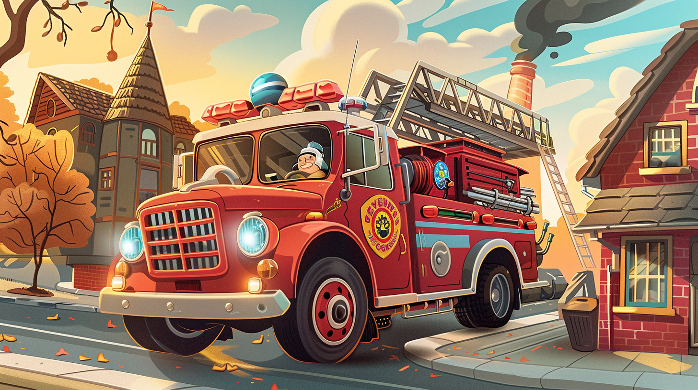
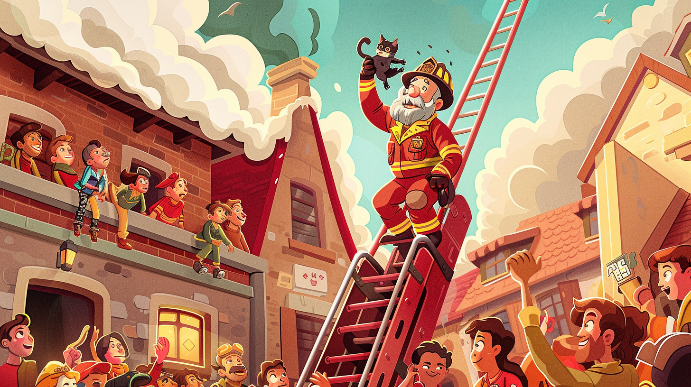
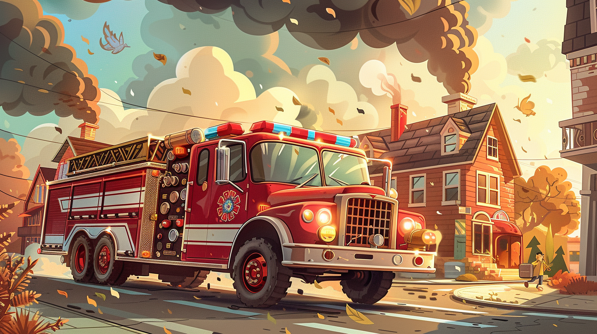

Bylo jednou jedno malé město, kde žilo hasičské auto jménem Tomáš. Měl nádhernou červenou barvu s modrými světly, velký žebřík na střeše a mocnou sirénu, která byla slyšet po celém městě. Tomáš byl velmi hrdý na svou práci – chránit lidi a zachraňovat je z nebezpečí.
Každé ráno se Tomáš probudil na hasičské stanici a těšil se na nový den. Jeho nejlepším kamarádem byl starý hasičský kapitán František, který měl dlouhé šedé vousy a vždy věděl, co dělat v každé situaci. "Tomáši," říkával František, "naší prací je pomáhat lidem, ať už je situace jakákoli."
Jednoho středečního dopoledne se rozezněl poplašný zvon na hasičské stanici. Červené světlo začalo blikat a kapitán František rychle nasedl do Tomáše. "Požár v továrně na okraji města!" zakřičel do vysílačky. Tomáš zapnul svou sirénu a s blikajícími světly vyjel ze stanice.
Když dorazili na místo, uviděli obrovské sloupy černého kouře vystupující z okna továrny. Lidé stáli venku a vypadali vystrašeně. "Všichni jsme venku, ale v budově uvízla naše kočka Micka!" křičela jedna z pracovnic.

Kapitán František rychle připojil hadici k Tomášovi a začal stříkat vodu na plameny. Ale kouř se stával stále hustším a vstup do budovy byl nebezpečný. "Tomáši, musíme dostat Micku ven, ale jak?" zamyslel se František.
Tomáš se zamyslel. Potom si vzpomněl na svůj vysoký žebřík na střeše. "Františku, co kdybychom použili můj žebřík a dostali se k oknu ve druhém patře? Tam by kouř ještě nemusel být tak hustý!"
František se usmál. "To je skvělý nápad!" Rychle rozložil Tomášův žebřík a vyšplhal nahoru k oknu druhého patra. Tam skutečně kouř nebyl tak hustý a František mohl vstoupit do budovy. Po několika minutách se ozval slabý mňoukot.
"Našel jsem ji!" zakřičel František a za chvíli se objevil v okně s malou černobílou kočičkou v náručí. Pomalu sestoupil po žebříku dolů, kde už čekala celá skupina lidí. Všichni tleskali a jásali radostí.

Mezitím se podařilo uhasit požár a továrna byla zachráněna. Škody byly minimální a nikdo nebyl zraněn. Kočka Micka byla v pořádku, jen trochu vystrašená a špinavá od kouře.
"Tomáši, bez tvého nápadu s žebříkem bychom to nezvládli," řekl František, když se vraceli na stanici. "Tvůj vysoký žebřík nám umožnil dostat se tam, kam jinak nemůžeme."
Tomáš se zaruměnil hrdostí. Uvědomil si, že každá část jeho výbavy má svůj důvod a účel. Žebřík není jen tak pro okrasu – je to životně důležitý nástroj pro záchranu lidí a zvířat.
Následující den dostali Tomáš a kapitán František poděkování od majitele továrny a také pěknou medaili od starosty města. Ale nejlepší odměnou pro Tomáše bylo vidět šťastné tváře lidí a vědět, že pomohl zachránit život malé kočičky.
A od té doby, kdykoli Tomáš slyšel mňoukání na ulici, vždy si vzpomněl na Micku a na ten den, kdy jeho žebřík pomohl zachránit život. Věděl, že být hasičským autem znamená být připravený pomoci kdykoli a kdekoli to bude potřeba.

Zajímavé fakty o hasičských autech:
Hasičská auta mají červenou barvu, protože červená je mezinárodně uznávaná barva pro nouzová vozidla. Červená barva je velmi výrazná a dobře viditelná i za špatného počasí nebo v noci. V některých zemích používají hasiči i jiné barvy - například ve Francii jsou hasičská auta červená, ale ve Velké Británii mohou být žlutá.
Žebřík na hasičském autě může dosahovat výšky až 30 metrů, což je přibližně jako desetipodlažní budova! Tento žebřík se nazývá "autožebřík" a je ovládán hydraulicky. Hasiči ho mohou natáhnout a otáčet do různých směrů, aby se dostali k oknům nebo na střechy budov.
Sirény hasičských aut nejsou jen hlasité kvůli tomu, aby všichni věděli, že jedou. Různé tóny sirény mají různé významy. Kontinuální tón znamená "uhněte z cesty", přerušovaný tón může signalizovat "blížíme se k místu zásahu" a některé speciální tóny upozorňují na typ zásahu.